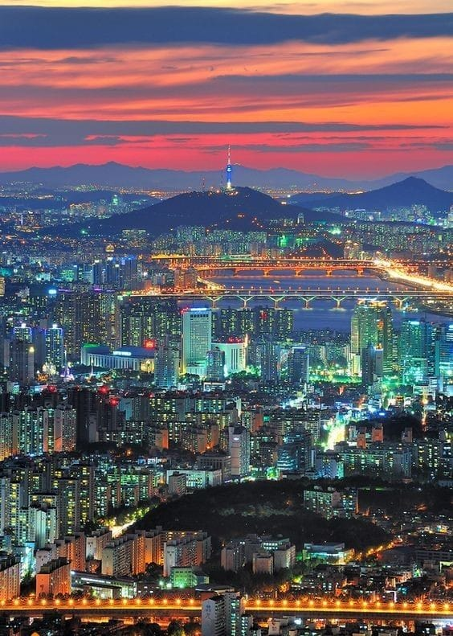
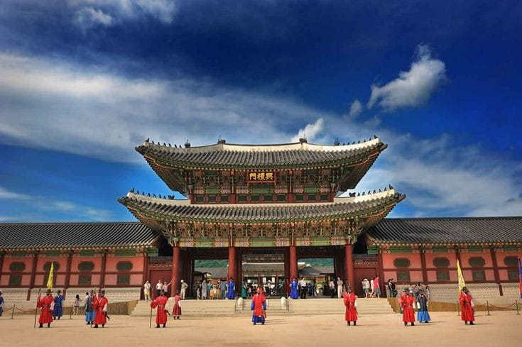
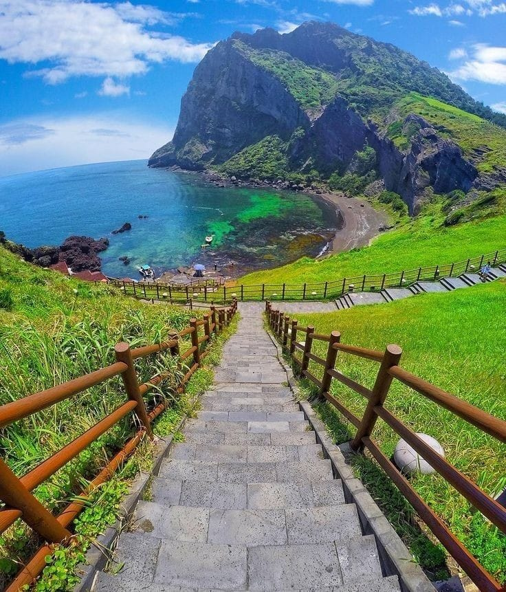

Seul é a capital da Coreia do Sul e um dos destinos turísticos mais visitados do país. A cidade é um fascinante contraste entre o moderno e o tradicional, com arranha-céus futuristas ao lado de templos antigos e mercados tradicionais.
O Palácio Gyeongbokgung é um dos cinco grandes palácios de Seul e é um dos marcos históricos mais importantes da Coreia do Sul. Construído no século 14, o palácio foi a residência real da dinastia Joseon e hoje abriga o Museu Nacional do Palácio da Coreia.
A Ilha de Jeju é conhecida por suas paisagens naturais deslumbrantes, com praias, montanhas e cachoeiras. É um destino popular para quem busca um contato mais próximo com a natureza, além de ser o lar do famoso Monte Hallasan.
